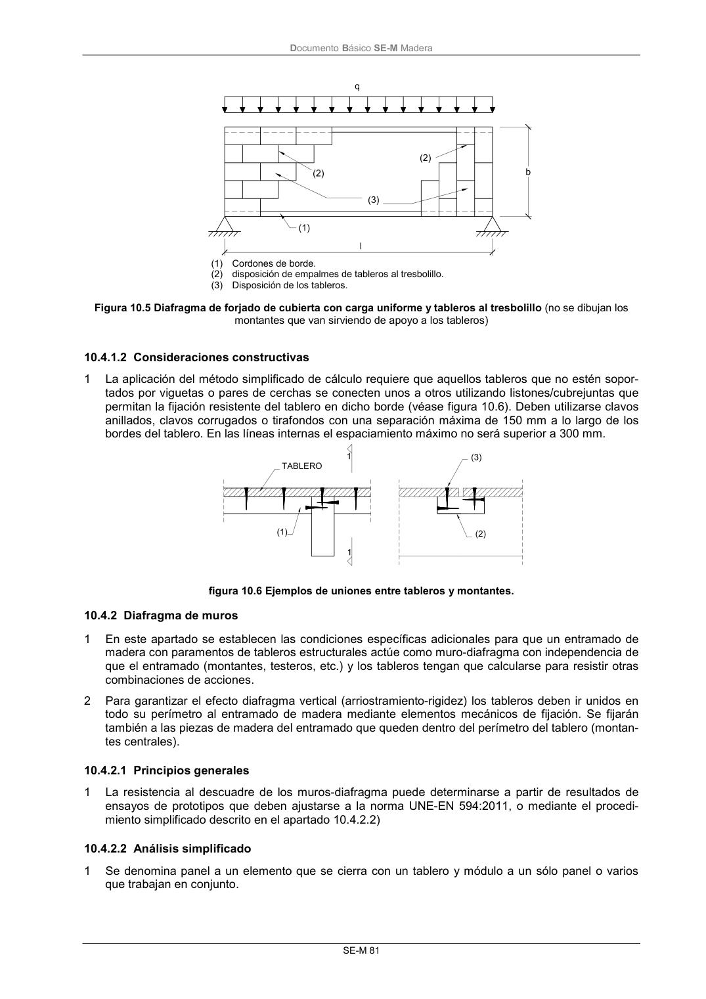
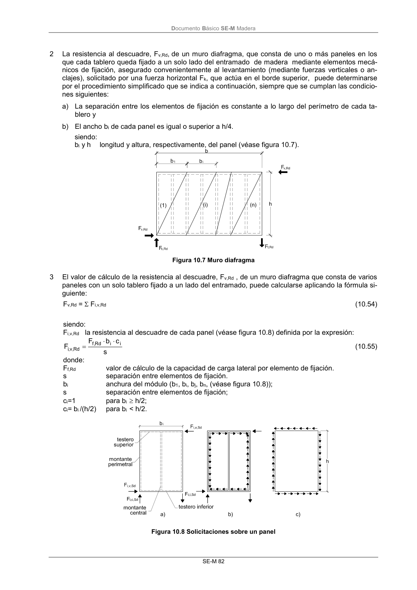
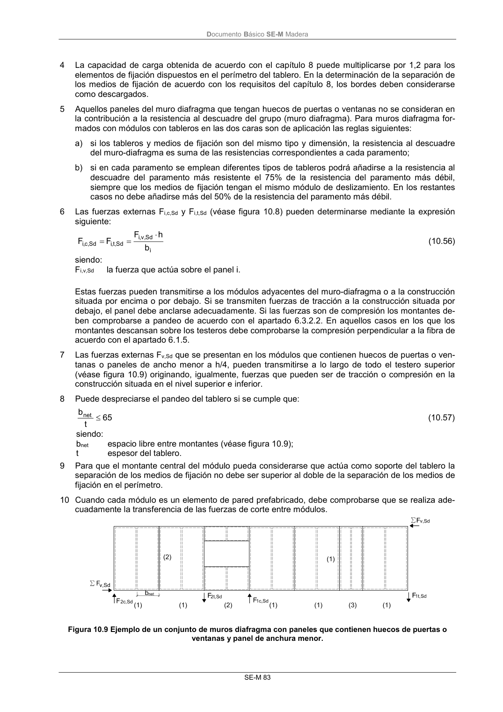
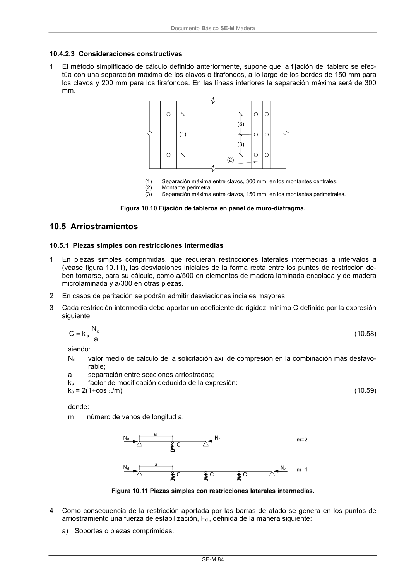

DB-SE-M · 10.4.2.1 Principios generales · versión 2019-12-20 · capa oficial
Formatos: JSON compacto · Markdown · PDF fuente
Ámbito del documento · texto del ámbito · documento y tablas
ID técnico a0151 · PDF pág. 87-90 · jerarquía no validada por persona · contrastado con el literal de la página 87 (candidato tipográfico); no validado por persona · padre: a0150
10.4.2.1 Principios generales 1 La resistencia al descuadre de los muros-diafragma puede determinarse a partir de resultados de ensayos de prototipos que deben ajustarse a la norma UNE-EN 594:2011, o mediante el procedi- miento simplificado descrito en el apartado 10.4.2.2) 10.4.2.2 Análisis simplificado 1 Se denomina panel a un elemento que se cierra con un tablero y módulo a un sólo panel o varios que trabajan en conjunto. DocumentoBásico SE-M Madera SE-M 82 2 La resistencia al descuadre, Fv,Rd,de un muro diafragma, que consta de uno o más paneles en los que cada tablero queda fijado a un solo lado del entramado de madera mediante elementos mecá- nicos de fijación, asegurado convenientemente al levantamiento (mediante fuerzas verticales o an- clajes), solicitado por una fuerza horizontal Fk, que actúa en el borde superior, puede determinarse por el procedimiento simplificado que se indica a continuación, siempre que se cumplan las condicio- nes siguientes: a) La separación entre los elementos de fijación es constante a lo largo del perímetro de cada ta- blero y b) El ancho bi de cada panel es igual o superior a h/4. siendo: bi y h longitud y altura, respectivamente, del panel (véase figura 10.7). Figura 10.7 Muro diafragma 3 El valor de cálculo de la resistencia al descuadre, Fv,Rd , de un muro diafragma que consta de varios paneles con un solo tablero fijado a un lado del entramado, puede calcularse aplicando la fórmula si- guiente: Fv,Rd = Fi,v,Rd (10.54) siendo: Fi,v,Rd la resistencia al descuadre de cada panel (véase figura 10.8) definida por la expresión: s c b F F i i Rd ,f Rd ,v,i (10.55) donde: Ff,Rd valor de cálculo de la capacidad de carga lateral por elemento de fijación. s separación entre elementos de fijación. bi anchura del módulo (b1, bi, bj, bn, (véase figura 10.8)); s separación entre elementos de fijación; ci=1 para bi h/2; ci= bi /(h/2) para bi < h/2. Figura 10.8 Solicitaciones sobre un panel DocumentoBásico SE-M Madera SE-M 83 4 La capacidad de carga obtenida de acuerdo con el capítulo 8 puede multiplicarse por 1,2 para los elementos de fijación dispuestos en el perímetro del tablero. En la determinación de la separación de los medios de fijación de acuerdo con los requisitos del capítulo 8, los bordes deben considerarse como descargados. 5 Aquellos paneles del muro diafragma que tengan huecos de puertas o ventanas no se consideran en la contribución a la resistencia al descuadre del grupo (muro diafragma). Para muros diafragma for- mados con módulos con tableros en las dos caras son de aplicación las reglas siguientes: a) si los tableros y medios de fijación son del mismo tipo y dimensión, la resistencia al descuadre del muro-diafragma es suma de las resistencias correspondientes a cada paramento; b) si en cada paramento se emplean diferentes tipos de tableros podrá añadirse a la resistencia al descuadre del paramento más resistente el 75% de la resistencia del paramento más débil, siempre que los medios de fijación tengan el mismo módulo de deslizamiento. En los restantes casos no debe añadirse más del 50% de la resistencia del paramento más débil. 6 Las fuerzas externas Fi,c,Sd y Fi,t,Sd (véase figura 10.8) pueden determinarse mediante la expresión siguiente: i Sd , v,i Sd ,t,i Sd , c,i b h F F F (10.56) siendo: Fi,v,Sd la fuerza que actúa sobre el panel i. Estas fuerzas pueden transmitirse a los módulos adyacentes del muro-diafragma o a la construcción situada por encima o por debajo. Si se transmiten fuerzas de tracción a la construcción situada por debajo, el panel debe anclarse adecuadamente. Si las fuerzas son de compresión los montantes de- ben comprobarse a pandeo de acuerdo con el apartado 6.3.2.2. En aquellos casos en los que los montantes descansan sobre los testeros debe comprobarse la compresión perpendicular a la fibra de acuerdo con el apartado 6.1.5. 7 Las fuerzas externas Fv,Sd que se presentan en los módulos que contienen huecos de puertas o ven- tanas o paneles de ancho menor a h/4, pueden transmitirse a lo largo de todo el testero superior (véase figura 10.9) originando, igualmente, fuerzas que pueden ser de tracción o compresión en la construcción situada en el nivel superior e inferior. 8 Puede despreciarse el pandeo del tablero si se cumple que: 65 t bnet (10.57) siendo: bnet espacio libre entre montantes (véase figura 10.9); t espesor del tablero. 9 Para que el montante central del módulo pueda considerarse que actúa como soporte del tablero la separación de los medios de fijación no debe ser superior al doble de la separación de los medios de fijación en el perímetro. 10 Cuando cada módulo es un elemento de pared prefabricado, debe comprobarse que se realiza ade- cuadamente la transferencia de las fuerzas de corte entre módulos. Figura 10.9 Ejemplo de un conjunto de muros diafragma con paneles que contienen huecos de puertas o ventanas y panel de anchura menor. DocumentoBásico SE-M Madera SE-M 84




PDF fuente redistribuible: copia fiel enlazada en esta página (SHA256 verificado).